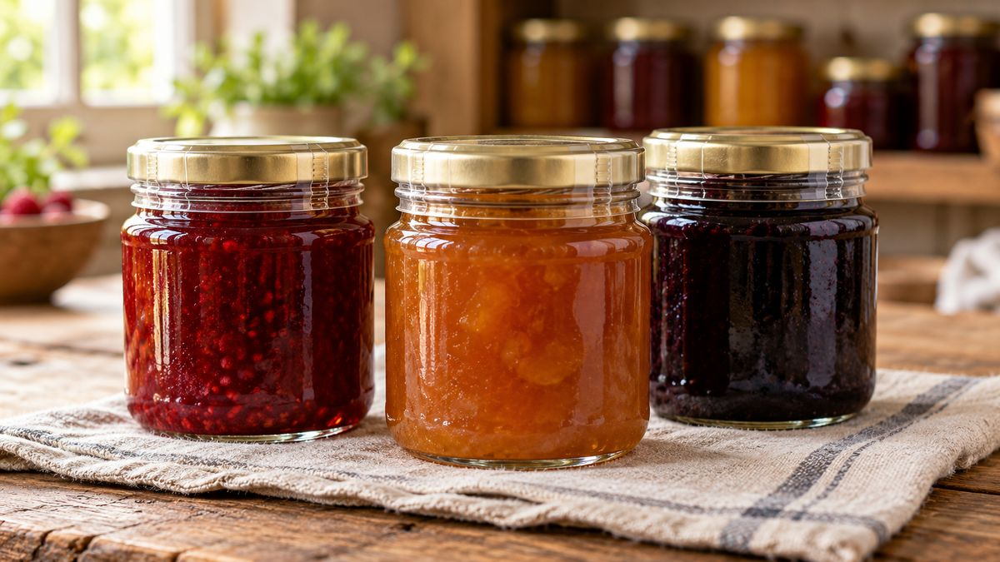

Vale a pena usar lacre de segurança na embalagem?

Você viu um concorrente vendendo geleia ou molho com aquele plástico esticado em volta da tampa e ficou em dúvida se também precisa disso. A resposta muda dependendo do que você vende: existe lei que obriga o lacre, mas ela não cobre pote de geleia, mel ou conserva vendido pela internet.
O que a lei realmente exige (e pra quem)
A Lei federal nº 11.954/2021 obriga restaurante, lanchonete, bar e outros estabelecimentos que entregam comida pronta pra consumo imediato por delivery a usar selo de garantia ou lacre inviolável. Descumprir dá multa, e o cliente pode recusar ou devolver o produto se o lacre chegar violado.
Essa lei fala de comida pronta entregue por delivery, tipo o que sai de restaurante pra motoboy. Pote de geleia, mel ou conserva vendido em marketplace, site ou direto pro cliente, e enviado por Correios ou transportadora, é uma categoria diferente. Se é isso que você vende, a lei não te obriga a usar lacre.
Então por que tanta gente que vende em pote usa mesmo sem ser obrigado
Porque o lacre continua resolvendo um problema real mesmo fora do delivery: ele mostra pro cliente que ninguém abriu o pote entre a sua cozinha e a casa dele. Isso é prática comercial recorrente entre quem vende geleia, doce e molho artesanal em pote de vidro, mesmo sendo opcional, porque reduz dúvida e contestação ("chegou violado?") numa venda onde o cliente não te viu fechar o pote pessoalmente.
Como funciona na prática
O lacre mais comum pra esse uso é o termoencolhível: um plástico fino que envolve a tampa e a boca do pote, e precisa ser cortado ou rasgado pra abrir, o que deixa evidente se alguém já mexeu ali. Pra aplicar, precisa de calor: existem máquinas específicas pra quem já vende em volume, mas em escala pequena um secador de cabelo já é suficiente pra encolher o plástico no lugar.
Quando faz mais sentido usar
Vale mais a pena quando o cliente não vê você fechando o produto, como em venda por marketplace ou site, quando o pote passa por transporte antes de chegar, ou quando você quer diferenciar seu produto de um concorrente que não usa nada. Se você vende só pessoalmente, de mão em mão, o benefício é bem menor.
Se você já decidiu qual pote de vidro vai usar e quer ver as opções completas de fechamento, conheça o catálogo da PodEmbalar ou fala direto com a gente pelo WhatsApp.